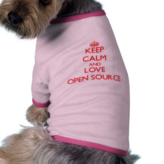

Hound
Wants your code to reflect
the beauty of your soul.
Hound reviews your PR
For style guide violations so that
your team mates don't have to.
Hound is Open Source
An MIT licensed rails app
from our friends at thoughtbot.
So we forked it

And use our own style guides for free at
mnd-hound.herokuapp.com
How is the styleguide managed?
- Derived from ruby community styleguide (rubocop)
- Hound made it less fanatic and more like githubs
- Tweaked for common mynewsdesk preferences
- Keep tweaking when needed via PR's and majority +1 votes
Thanks & Resources
- Mnd-Hound github repository
- Mnd-Hound on Heroku
- Rubocop github repository